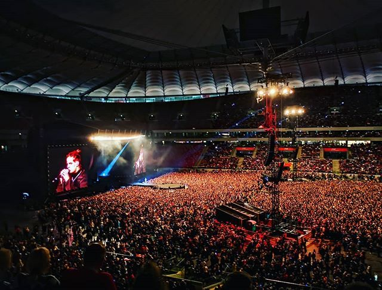

Szczyt popularności i ostatnie albumy
Choć w piosence Café Belga zapowiadał możliwą przerwę od muzyki w 2019 roku, 7 lutego w internecie ukazało się zdjęcie na którym można było zobaczyć rapera podczas sesji nagraniowej w studiu. 9 lutego 2019 roku do internetu wyciekł fragment nowego utworu muzyka, który to wytwórnia Asfalt Records próbowała bezskutecznie usuwać. 12 lutego tego samego roku wystąpił gościnie w singlu Bedoesa pt. „Chłopaki nie płaczą”, a dziennik Newonce umieścił jego zwrotkę w rankingu „5 kawałków, które przesunęły granice tego, co wolno, a czego nie w polskim rapie. W kwietniu tego samego roku, na profilu instagramowym studia nagraniowego w którym pracuje raper, pojawił się wpis który potwierdził powstawanie nowej płyty. W maju 2019 roku, artysta razem z Dawidem Podsiadło ogłosił koncert na Stadionie Narodowym w Warszawie. Taco dodał również że jest to jedyny jego koncert w tym roku. Wydarzenie zdobyło duży rozgłos i już w niemal 3 godziny artyści wyprzedali wszystkie bilety, czyli 73 tys. miejsc zapełniając cały stadion. Tym samym muzycy pobili rekord polski i sprzedali więcej biletów niż Metallica czy Coldplay.16 lipca 2019 roku raper zapowiedział premierę nowego albumu pt. Pocztówka z WWA, lato '19 na 9 sierpnia oraz ruszyła przedsprzedaż albumu. Muzyk na instagramie napisał że pomimo zapowiadanej przerwy, nie mógł się powstrzymać i jak co roku wyda nowy album w lato. Po raz pierwszy na płycie raper zaprosił gości, pojawili się inni muzycy tacy jak Pezet, Dawid Podsiadło, Schafter, Kizo, Ras i Rosalie. Dnia 23 lipca 2019, koło godziny 22, album niespodziewanie został wydany w wersji elektronicznej w serwisie YouTube oraz w serwisach streamingowych m.in. takich jak Spotify, jak zawsze raper udostępnił cały album do pobrania za darmo w standardzie MP3 na swojej stronie internetowej. Raper zadebiutował na pierwszym miejscu polskiej listy sprzedaży – OLiS po raz czwarty z rzędu i utrzymywał się na pierwszym miejscu przez trzy tygodnie. Album w przedsprzedaży sprzedał się w 15 000 egzemplarzy a 21 sierpnia 2019 roku otrzymał certyfikat złotej płyty od ZPAV. Płyta zebrała generalnie dobre oceny krytyków. Utwory z płyty pt. „W piątki leżę w wannie” oraz „Sanatorium” trafiły na listy przebojów w polskich radiach. 15 sierpnia artysta wystąpił gościnnie w singlu Kizo, pt. „Niebieski Bentley”. Raper również wystąpił gościnnie na albumie Pezeta, Muzyka Współczesna w utworze „2K30”. 30 października 2019 roku album uzyskał status platynowy za sprzedaż ponad 30 tys. egzemplarzy. W październiku raper pojawił się na 10 miejscu Najbardziej wpływowych Polaków 2019 według dziennika Wprost. 6 listopada 2019 roku artysta wystąpił gościnnie w singlu Schaftera, pt „bigos” do którego również ukazał się teledysk. Utwór zdobył 1. miejsce na karcie czasu w platformie Youtube oraz Spotify. Również w listopadzie wystąpił gościnnie w dwóch utworach na płycie Bedoesa, pt. Opowieści z doliny smoków.Z początkiem roku 2020 ruszył w szóstą trasę koncertową pt. Pocztówka z Polski Tour. Z uwagi na epidemię COVID-19, trasa została przełożona na późniejszy termin. Album Pocztówka z WWA zdobył nominacje do wielu nagród m.in. do Fryderyków 2020 czy Bestsellerów Empiku 2019 oraz był dziesiątą pod względem sprzedaży płytą w Polsce. W trakcie trwania pandemii COVID-19 wziął udział w akcji #hot16challenge2, promującej zbiórkę funduszy na rzecz personelu medycznego. Sam przekazał na ten cel 100 tysięcy złotych. W swojej zwrotce zapowiedział że może wyda kilka płyt w lipcu. 25 czerwca 2020 roku pojawiło się zdjęcie rapera ze studia Nagrywaka, zapowiadając że nowa płyta jest w trakcie tworzenia. 3 lipca wystąpił gościnnie w singlu Artura Rojka pt. A miało być jak we śnie, do którego został zrealizowany klip. W lipcu 2020 roku raper wspólnie z grupą Pro8l3m założył wydawnictwo muzyczne noszące nazwę 2020. 10 lipca 2020 roku, dzień przed cisza wyborczą, ukazuje się singiel pt. „Polskie tango”, który przedstawia polską mentalność, wyraża zmartwienie stanem kraju i nawiązuje do sytuacji politycznej w Polsce, krytykując ją. Singiel jest zapowiedzią albumu pt. Jarmark, zapowiedzianego na lato 2020 roku. Singiel pobił dzienny rekord odtworzeń w Polsce na Spotify, który poprzednio również należał do jego utworu „W piątki leżę w wannie”, zdobywając przy tym ponad 560 tys. odtworzeń. W serwisie YouTube zdobył ponad 2,5 mln. wyświetleń w 24h od publikacji również bijąc rekord. 28 lipca raper za pomocą serwisu Instagram ogłosił że premiera płyt została przesunięta z lipca na przełom sierpnia/września. 29 lipca 2020 w urodziny rapera wyszedł singel „Michael Essien Birthday Party”, zapowiadając nowy album pt. Europa, który wraz z Jarmarkiem wyjdzie 4 września 2020. Tego samego dnia ruszyła również przedsprzedaż albumów. 28 sierpnia 2020 roku raper znów niespodziewanie wydał album pt. Jarmark, udostępniając go w serwisach streamingowych oraz za darmo do pobrania na swojej stronie internetowej. 4 września 2020 roku album Europa trafił do sprzedaży w wersji fizycznej wraz z albumem Jarmark, w sklepach w całej Polsce oraz został udostępniony w serwisach streamingowych oraz za darmo do pobrania na swojej stronie internetowej. Artysta po raz piąty z rzędu zadebiutował na pierwszym miejscu listy OLiS z albumem Jarmark, na drugim miejscu znalazł się album Europa. Wraz z płytami, razem na liście znalazło się aż siedem albumów artysty, czym raper zrównał rekord Czesława Niemena co do ilości albumów w jednym notowaniu OLiS. Albumy uzyskały status złotej płyty 24 września 2020 roku. Album zebrał mieszane oceny, krytycy zarzucali raperowi że z poruszanych przez niego ciężkich tematów na płycie Jarmark, takich jak polityka kraju czy polski kościół, artysta za często rzuca truizami i banałami, nie mając nic ciekawego do powiedzenia. Z kolei niektórzy krytycy chwalili rapera, że w końcu ktoś z popularnego świata muzycznego próbuje poruszać takie tematy i nauczać młodzież. Album Europa zebrał średnie oceny, krytycy zarzucali ze album jest nierównomierny, miejscami ciekawy, a z kolei później robi się już miejscami miałki. W 2020 roku udzielił wywiadu wraz z PRO8L3M dla serwisu newonce, gdzie stwierdził że chce się teraz głownie zająć wydawaniem oraz pomaganiem nowych młodych artystów, w swojej nowej wytwórniOstatni utwór na płycie Europa wskazuje na to iż raper zamierza zawiesić swoją dotychczasową karierę.